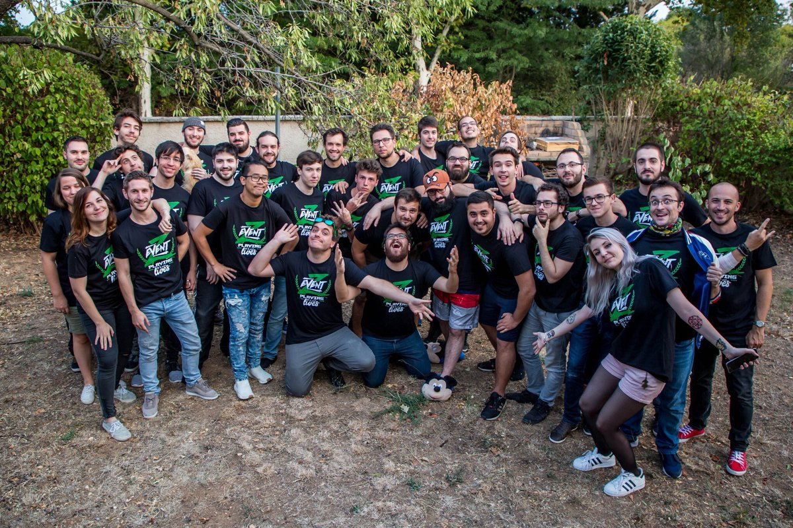

Le deuxieme ZEvent
Le deuxieme ZEvent était du 8 au 10 septembre 2017. C'est le premier à s'appeler à ZEvent. L'argent récolté était pour Croix-Rouge française et a essentiallement aidé aux Antilles puisque le ZEvent s'est déroulé 4 jours après l'ouragan Irma. Cette fois-ci, le ZEvent a duré 52 heures.
Les streamers et streameuses présent
Pendant cette édition, on pouvait retrouver 30 streamers et streameuses. Il y avait evidemment les 16 de la précédente édition mais aussi Kenny, Mister Mv, Aayley ou encore Hexakill .
L'argent récolté
Les dons ont été cette année de 451 851 € pour la Croix-Rouge. Un nouveau reccord salué par Emmanuel Macron sur twitter.
Les best of
Cette année, un best of officiel existe. Il est disponible sur la chaine youtube de Zerator.
